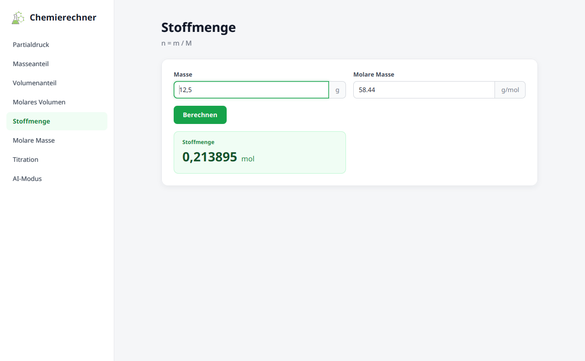
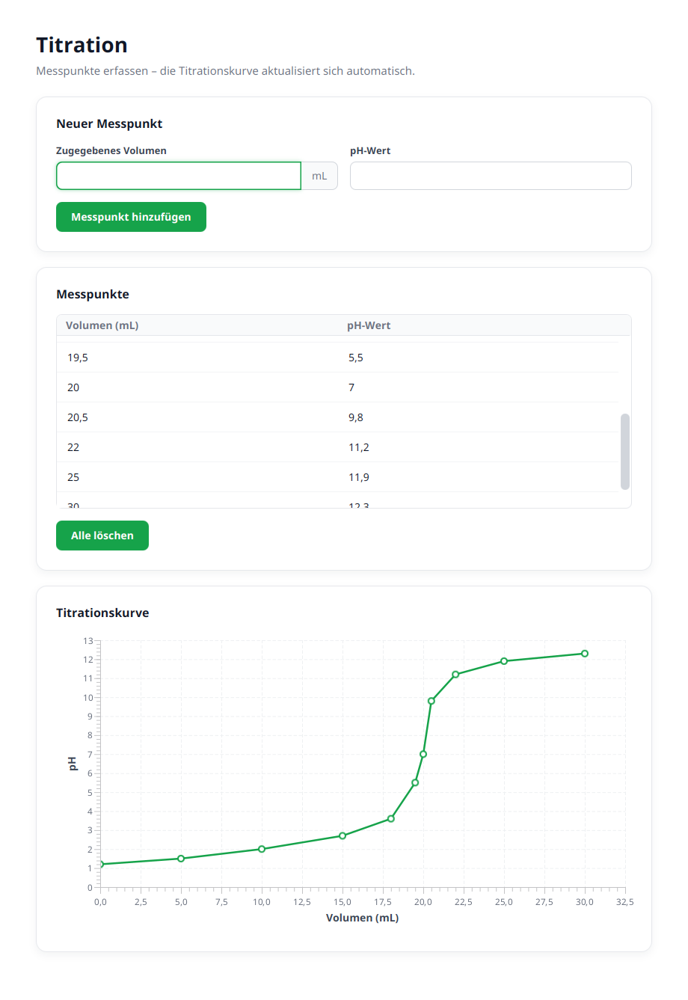
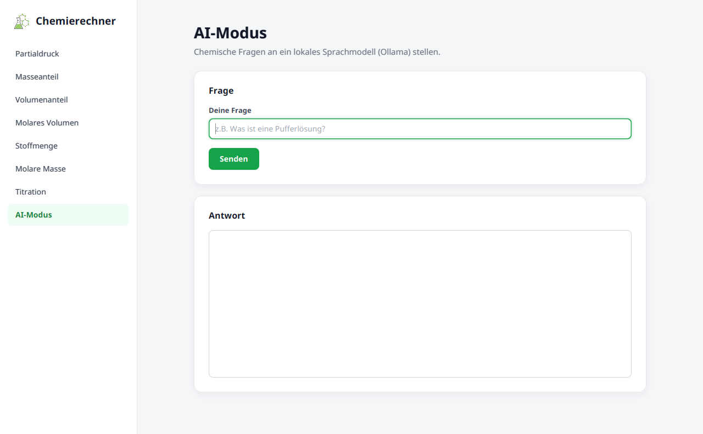
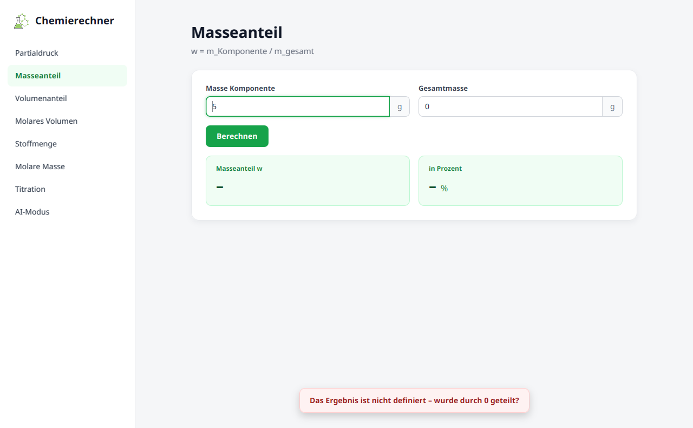

Chemierechner
Softwaredokumentation: Aufbau, Bedienung und Erweiterung
1Überblick
Der Chemierechner ist eine Desktop-Anwendung in Java mit JavaFX-Oberfläche. Mit ihm lassen sich typische Rechnungen aus dem Chemieunterricht und Studium erledigen: Stoffmengen, Anteile, Partialdrücke, Titrationskurven. Außerdem gibt es einen AI-Modus, der Fragen an ein lokal laufendes Sprachmodell weitergibt.
Die Oberfläche ist so gebaut, dass neue Rechner ohne JavaFX-Kenntnisse ergänzt werden können:
Jeder Rechner ist eine kleine Klasse, die nur beschreibt, welche Eingaben und Ergebnisse
es gibt. Wie das aussieht, entscheidet das Grundgerüst im Paket gui.
Funktionen
| Bereich | Funktion |
|---|---|
| Formeln | Partialdruck, Masseanteil, Volumenanteil, molares Volumen, Stoffmenge, molare Masse |
| Titration | Messpunkte erfassen, in einer Tabelle bearbeiten, Titrationskurve wird automatisch gezeichnet |
| AI‑Modus | Chemische Fragen an ein lokales Sprachmodell über Ollama |
| Komfort | Komma oder Punkt als Dezimaltrennzeichen, Enter startet die Berechnung, Ergebnis per Klick kopieren, verständliche Fehlermeldungen |

2Installation & Start
Voraussetzungen
| Komponente | Version | Erwarteter Ort |
|---|---|---|
| JDK (OpenJDK) | 25 | /usr/lib/jvm/java-25-openjdk-amd64 |
| JavaFX SDK | 25.0.4 | ~/javafx-sdk-25.0.4 |
| VS Code (optional) | aktuell | mit „Extension Pack for Java“ |
| Ollama (nur AI-Modus) | aktuell | läuft auf http://localhost:11434 |
JavaFX ist seit Java 11 nicht mehr Teil des JDK und muss separat heruntergeladen werden
(gluonhq.com/products/javafx).
Das SDK wird einfach entpackt; Pfade zu ihm stehen in .vscode/settings.json,
.vscode/launch.json und run.sh. Liegt es woanders, müssen diese drei Stellen angepasst werden.
Für den AI-Modus muss zusätzlich das Modell installiert sein:
ollama pull cas/teuken-7b-q4km
ollama serveStart in VS Code
- Den Repository-Ordner
Chemierechner(oberste Ebene) in VS Code öffnen. - Ansicht „Ausführen und Debuggen“ öffnen (
Strg+Shift+D). - Im Dropdown „Chemierechner - STARTEN“ wählen und F5 drücken.
Dann hat VS Code die Einstellungen noch nicht übernommen: Strg+Shift+P →
„Java: Clean Java Language Server Workspace“ → „Restart and delete“.
Start im Terminal
cd ~/Dokumente/Github/Chemierechner/Chemierechner
./run.sh
Das Skript löscht bin/, kompiliert alle Quellen neu, kopiert die Ressourcen
(CSS, Icon, Textdateien) und startet anschließend gui.ChemierechnerApp.
3Bedienung
Links befindet sich die Seitenleiste mit allen Rechnern. Ein Klick wechselt die Ansicht; eingegebene Werte bleiben beim Wechseln erhalten.
Formel-Rechner
- Werte in die Felder eingeben. Die Einheit steht rechts im Feld.
0,5,0.5und6,022e23werden alle verstanden.- Berechnen klicken oder in einem Feld Enter drücken.
- Ein Klick auf ein grünes Ergebnisfeld kopiert den Wert in die Zwischenablage.
Titration
- Volumen und pH-Wert eingeben, dann „Messpunkt hinzufügen“ (oder Enter im pH-Feld).
- Werte in der Tabelle per Doppelklick ändern.
- Zeile löschen: auswählen und Entf drücken oder Rechtsklick → „Zeile löschen“.
- Die Kurve aktualisiert sich nach jeder Änderung automatisch.
AI-Modus
- Frage eingeben, „Senden“ oder Enter. Während das Modell antwortet, erscheint unten „Bitte warten …“ und die Buttons sind gesperrt.


4Projektstruktur
Chemierechner/ Repository-Wurzel
├── .vscode/ VS-Code-Einstellungen (Java, JavaFX, Startkonfiguration)
├── .gitignore schließt bin/ und *.class aus
├── Doku/ diese Dokumentation
├── README.md
└── Chemierechner/
├── run.sh kompilieren + starten im Terminal
└── Chemierechner/ eigentliches Java-Projekt
├── bin/ Build-Ausgabe (wird erzeugt, nicht im Git)
└── src/
├── gui/ GUI-Grundgerüst – muss nicht angefasst werden
├── karten/ die einzelnen Rechner + Karten.java (Liste)
├── Berechnungen/ Formeln (reine Fachlogik)
├── Titrationen/ Titrationsdaten
├── APIcalls/ Anbindung an Ollama
├── Konstanten/ physikalische Konstanten
├── Groesen/ Liste physikalischer Größen + Einheiten
├── ress/style.css Aussehen der Oberfläche
└── icon.png Programm-Icon5Architektur
Schichten
Das Programm ist in drei Schichten aufgeteilt. Jede Schicht kennt nur die darunterliegende. Dadurch bleibt die Fachlogik frei von Oberflächencode und lässt sich unabhängig testen.
kartenguiBerechnungenTitrationenAPIcallsKonstantenGroesen
Einzige Ausnahme von „nur nach unten“: gui.ChemierechnerApp holt sich beim Start die
Liste der Karten aus karten.Karten. Diese eine Stelle verbindet beide Pakete.
Programmstart
ChemierechnerApp.main()→
JavaFX startet→
start(stage)→
Karten.alle()→
Konstruktoren der Karten bauen ihren Inhalt→
Seitenleiste + erste Karte anzeigen
Alle Karten werden beim Start einmal erzeugt und danach nur noch ein- und ausgeblendet. Deshalb bleiben Eingaben beim Wechseln erhalten. Wirft ein Karten-Konstruktor eine Exception, startet das Programm nicht; die Ursache steht dann in der Konsole.
Ereignisfluss bei einem Klick
Karte.ausfuehren(aktion)→
alte Meldung ausblenden→
aktion.run()→
bei Exception: Meldung unten anzeigen
Jede Aktion, die über einen Button, Enter oder eine Tabellenänderung ausgelöst wird, läuft durch
ausfuehren(). Dort werden alle Exceptions abgefangen. Die Karte selbst muss also kein
try/catch schreiben. Details in Kapitel 10.
6GUI-Grundgerüst (gui)
Das Paket gui enthält alles, was mit JavaFX zu tun hat. Öffentlich (public bzw.
protected) sind nur die Methoden, die Karten brauchen; JavaFX-Typen tauchen dort nirgends auf.
Klasse Karte
Abstrakte Basisklasse jeder Karte. Eine Unterklasse ruft im Konstruktor die folgenden Methoden auf; die Bausteine erscheinen in genau dieser Reihenfolge auf dem Bildschirm.
Aufbau-Methoden
| Methode | Rückgabe | Beschreibung |
|---|---|---|
Karte(String titel) | – | Konstruktor; der Titel erscheint in Seitenleiste und Überschrift. |
beschreibung(String text) | – | Grauer Text unter der Überschrift, z.B. die Formel. |
abschnitt(String titel) | – | Beginnt einen neuen weißen Kasten mit Überschrift. Ohne Aufruf wird automatisch ein Kasten ohne Überschrift angelegt. |
zahlenfeld(String beschriftung)zahlenfeld(String beschriftung, String einheit) | Zahlenfeld | Eingabefeld für eine Zahl; die Einheit steht rechts im Feld. |
textfeld(String beschriftung)textfeld(String beschriftung, String platzhalter) | Eingabefeld | Einzeiliges Textfeld über die volle Breite. |
button(String text, Runnable aktion) | – | Button, der beim Klick aktion ausführt. |
textbereich() | Textausgabe | Mehrzeiliger, nicht editierbarer Textbereich. |
tabelle(String... spalten) | Tabelle | Tabelle mit Zahlen, eine Spalte pro Name. |
diagramm(String xAchse, String yAchse) | Diagramm | Liniendiagramm mit Achsenbeschriftungen. |
Layout-Regeln
- Mehrere
zahlenfeld()-Aufrufe direkt hintereinander landen zweispaltig nebeneinander. - Mehrere
button()-Aufrufe direkt hintereinander landen in einer Reihe. - Alle anderen Bausteine nehmen die volle Breite ein und beenden eine laufende Feld- oder Button-Gruppe.
- Der Inhalt ist maximal 920 px breit und wird zentriert; bei Bedarf erscheint ein Scrollbalken.
Aktions-Methoden
| Methode | Beschreibung |
|---|---|
<T> imHintergrund(Callable<T> aufgabe, Consumer<T> danach) |
Führt aufgabe in einem eigenen Thread aus, damit das Fenster nicht einfriert.
Danach wird danach mit dem Ergebnis wieder im JavaFX-Thread aufgerufen.
Während der Ausführung sind alle Buttons der Karte gesperrt und unten erscheint „Bitte warten …“.
Exceptions der Aufgabe werden als Meldung angezeigt. |
info(String text) | Zeigt für 2,5 Sekunden einen dunklen Hinweis unten im Fenster. |
Klasse Formelkarte
Spezialisierung von Karte für das häufigste Muster: Zahlen eingeben → Berechnen → Ergebnis.
Der Aufbau (Eingaberaster, Button, Ergebnisraster) wird schon im Konstruktor der Formelkarte angelegt.
Deshalb ist die Reihenfolge von eingabe() und ergebnis() egal.
| Methode | Beschreibung |
|---|---|
eingabe(String kuerzel, String beschriftung)eingabe(String kuerzel, String beschriftung, String einheit) |
Legt ein Zahlenfeld an. Über das Kürzel wird der Wert in der Formel abgerufen. Kürzel müssen innerhalb einer Karte eindeutig sein. |
ergebnis(String beschriftung, Formel formel)ergebnis(String beschriftung, String einheit, Formel formel) |
Legt ein Ergebnisfeld an. Es darf mehrere geben; alle werden mit einem Klick berechnet. |
Formel ist ein funktionales Interface und wird fast immer als Lambda geschrieben:
public interface Formel {
double berechne(Werte werte);
}
// Verwendung:
ergebnis("Stoffmenge", "mol", w -> w.get("m") / w.get("M"));Beim Berechnen passiert Folgendes:
- Alle Ergebnisfelder werden auf „–“ zurückgesetzt.
- Alle Eingaben werden gelesen. Bei einem leeren oder ungültigen Feld bricht die Berechnung mit einer Meldung ab.
- Alle Formeln werden ausgewertet. Ist ein Ergebnis unendlich oder
NaN(z.B. durch Division durch 0), erscheint „Das Ergebnis ist nicht definiert – wurde durch 0 geteilt?“. - Erst wenn alle Formeln erfolgreich waren, werden die Ergebnisse angezeigt.
Werte hat nur eine Methode: double get(String kuerzel). Ein unbekanntes Kürzel führt zu einer Meldung mit Hinweis auf das fehlende eingabe(...).
Bausteine
Die Bausteine werden von den Aufbau-Methoden erzeugt. Ihre Konstruktoren sind absichtlich nicht öffentlich.
Zahlenfeld
| Methode | Beschreibung |
|---|---|
double wert() | Liest die Zahl. Wirft bei leerem Feld oder ungültiger Eingabe eine Fehlermeldung mit Feldnamen. |
boolean istLeer() | Prüft, ob das Feld leer ist (ohne Fehlermeldung). |
setWert(double wert) | Schreibt eine Zahl ins Feld. |
leeren() | Löscht den Inhalt. |
fokus() | Setzt den Cursor in das Feld. |
beiEnter(Runnable aktion) | Aktion beim Drücken von Enter. |
Eingabefeld
| Methode | Beschreibung |
|---|---|
String text() | Eingegebener Text ohne Leerzeichen am Anfang/Ende. |
setText(String), leeren(), fokus(), beiEnter(Runnable) | wie beim Zahlenfeld |
Textausgabe
| Methode | Beschreibung |
|---|---|
String text(), setText(String) | Inhalt lesen bzw. ersetzen. |
anhaengen(String) | Text am Ende anfügen. |
leeren() | Inhalt löschen. |
Tabelle
| Methode | Beschreibung |
|---|---|
zeileHinzufuegen(double... werte) | Neue Zeile am Ende. Die Anzahl der Werte muss der Spaltenzahl entsprechen. |
List<double[]> zeilen() | Kopie aller Zeilen; jede Zeile ist ein Array mit einem Wert pro Spalte. |
leeren() | Alle Zeilen entfernen. |
beiAenderung(Runnable aktion) | Wird nach jedem Hinzufügen, Bearbeiten und Löschen aufgerufen. |
Benutzer können Zellen per Doppelklick bearbeiten. Eine ungültige Eingabe wird verworfen und mit einer Meldung quittiert. Zeilen werden mit Entf oder über das Kontextmenü gelöscht.
Diagramm
| Methode | Beschreibung |
|---|---|
zeichne(String name, List<double[]> punkte) | Ersetzt den Inhalt durch eine Kurve; jeder Punkt ist {x, y}. Die Punkte werden nach x sortiert verbunden. |
leeren() | Kurve entfernen. |
Fehlermeldung
Unterklasse von RuntimeException. Ihr Text wird dem Benutzer unverändert angezeigt.
Siehe Fehlerbehandlung.
Interne Klassen
Diese Klassen sind nur innerhalb von gui sichtbar und für Karten nicht relevant.
| Klasse | Aufgabe |
|---|---|
ChemierechnerApp | Hauptklasse (main). Baut Fenster, Seitenleiste und lädt CSS und Icon. Die Seitenleiste besteht aus ToggleButtons in einer ToggleGroup; ein erneuter Klick auf den aktiven Eintrag wählt ihn nicht ab. |
Meldung | Die Einblendung unten im Fenster: Fehler (rot, 6 s), Info (dunkel, 2,5 s) oder „Bitte warten“ mit Ladeanzeige (bis zum Ende der Aufgabe). Ein Klick blendet sie aus. |
Feldraster | GridPane mit zwei gleich breiten Spalten; füllt zeilenweise. |
Zahlenformat | Lesen und Formatieren von Zahlen, siehe Kapitel 11. |
7Karten (karten)
Welche Karten es gibt und in welcher Reihenfolge sie in der Seitenleiste stehen, legt
karten.Karten.alle() fest:
public static List<Karte> alle() {
return List.of(
new PartialdruckKarte(),
new MasseanteilKarte(),
new VolumenanteilKarte(),
new MolaresVolumenKarte(),
new StoffmengeKarte(),
new MolareMasseKarte(),
new TitrationKarte(),
new AiKarte()
);
}Formelkarten
| Karte | Formel | Eingaben (Kürzel) | Ergebnis |
|---|---|---|---|
| Partialdruck | p = x · pges | Gesamtdruck in bar (p), Stoffmengenanteil 0–1 (x) | Partialdruck in bar |
| Masseanteil | w = mK / mges | Masse Komponente in g (m), Gesamtmasse in g (mGes) | w und w in % |
| Volumenanteil | φ = VK / Vges | Volumen Komponente in mL (V), Gesamtvolumen in mL (VGes) | φ und φ in % |
| Molares Volumen | Vm = V / n | Volumen in L (V), Stoffmenge in mol (n) | Vm in L/mol |
| Stoffmenge | n = m / M | Masse in g (m), molare Masse in g/mol (M) | n in mol |
| Molare Masse | M = m / n | Masse in g (m), Stoffmenge in mol (n) | M in g/mol |
Bei Partialdruck, Masse- und Volumenanteil gelten die Einheiten als Vorschlag: Da sich die Einheiten herauskürzen bzw. durchgereicht werden, funktioniert die Rechnung mit jeder einheitlichen Einheit.
Freie Karten
TitrationKarte
- Abschnitt „Neuer Messpunkt“: zwei Zahlenfelder (Volumen in mL, pH-Wert) und ein Button.
- Abschnitt „Messpunkte“: Tabelle mit den Spalten Volumen und pH, Button „Alle löschen“.
- Abschnitt „Titrationskurve“: Diagramm.
- pH-Werte außerhalb von 0–14 werden mit einer
Fehlermeldungabgelehnt. - Über
messpunkte.beiAenderung(...)wird nach jeder Änderung ein neuesTitration-Objekt aus der Tabelle aufgebaut und die Kurve neu gezeichnet. Die Tabelle ist damit die einzige Datenquelle.
AiKarte
- Textfeld für die Frage, Button „Senden“, Textbereich für die Antwort.
- Die Anfrage läuft über
imHintergrund(...), damit das Fenster bedienbar bleibt. - Eine
ConnectException(Ollama läuft nicht) wird in die verständliche Meldung „Keine Verbindung zu Ollama – läuft der Dienst? (ollama serve)“ übersetzt.
8Fachlogik
Die Fachklassen enthalten keinen GUI-Code und können unabhängig von der Oberfläche benutzt werden.
Paket Berechnungen
| Klasse | Methode | Formel |
|---|---|---|
Partialdruck | berechnePartialdruck(gesamtDruck, anteil) | p = pges · x |
Masseanteil | berechneMasseanteil(masseKomponente, gesamtMasse) | w = mK / mges |
Volumenanteil | berechneVolumenanteil(volumenKomponente, gesamtVolumen) | φ = VK / Vges |
molaresVolumen | berechneMolaresVolumen(volumen, stoffmenge) | Vm = V / n |
Stoffmenge | berechneStoffmenge(masse, molareMasse) | n = m / M |
molareMasse | berechneMolareMasse(masse, stoffmenge) | M = m / n |
Alle Methoden nehmen und liefern double und prüfen ihre Eingaben nicht; die Prüfung übernimmt die Oberfläche.
Paket Titrationen
Titration speichert eine Messkurve als Liste von double[] {volumen, pH}.
addpH(pH, volumen) fügt einen Punkt hinzu (Achtung: pH zuerst), getKurve() liefert die Liste.
Paket APIcalls
modelAdapter.generate(String prompt) schickt eine HTTP-POST-Anfrage an
http://localhost:11434/api/generate (Modell cas/teuken-7b-q4km:latest, stream: false)
und gibt das Feld response der JSON-Antwort zurück. JSON wird ohne Bibliothek per Zeichenkettensuche
gelesen und geschrieben. Der Verbindungs-Timeout beträgt 10 Sekunden. Modell und URL sind Konstanten am Anfang der Klasse.
Paket Konstanten
avogadroKonstante.getWert() liefert NA = 6,02214076 · 10²³ mol⁻¹.
Paket Groesen
groessen.txt listet physikalische Größen im Format Name,Symbol,Einheit1;Einheit2,
z.B. Druck,p,Pa;atm;bar;mmHg. GroessenReader ist ein eigenständiges
Konsolenprogramm, das die Datei als Tabelle ausgibt. Es ist derzeit nicht in die Oberfläche eingebunden.
9Neue Karte anlegen
Für jede neue Karte sind genau zwei Schritte nötig. Am Paket gui wird nichts geändert.
- Neue Klasse in
src/karten/anlegen, die vonFormelkarteoderKarteerbt. - In
src/karten/Karten.javaeine Zeilenew MeineKarte(),an der gewünschten Stelle ergänzen.
Beispiel: Formelkarte „Dichte“
Optional zuerst die Formel als Fachklasse in Berechnungen ablegen:
package Berechnungen;
public class Dichte {
public double berechneDichte(double masse, double volumen) {
// ρ = m / V
return masse / volumen;
}
}Dann die Karte:
package karten;
import Berechnungen.Dichte;
import gui.Formelkarte;
public class DichteKarte extends Formelkarte {
public DichteKarte() {
super("Dichte");
beschreibung("ρ = m / V");
eingabe("m", "Masse", "g");
eingabe("V", "Volumen", "cm³");
ergebnis("Dichte", "g/cm³",
w -> new Dichte().berechneDichte(w.get("m"), w.get("V")));
}
}Und eintragen:
return List.of(
...
new MolareMasseKarte(),
new DichteKarte(), // neu
new TitrationKarte(),
...
);Beispiel: freie Karte
Wenn das Formel-Muster nicht passt, erbt die Karte direkt von Karte. Bewährt hat sich:
Bausteine als Felder speichern, Aktionen als eigene Methoden schreiben und per this::methode übergeben.
package karten;
import gui.Fehlermeldung;
import gui.Karte;
import gui.Tabelle;
import gui.Zahlenfeld;
public class VerduennungKarte extends Karte {
private final Zahlenfeld c1;
private final Zahlenfeld v1;
private final Zahlenfeld c2;
private final Tabelle verlauf;
public VerduennungKarte() {
super("Verdünnung");
beschreibung("c₁ · V₁ = c₂ · V₂ – benötigtes Endvolumen berechnen");
abschnitt("Eingaben");
c1 = zahlenfeld("Ausgangskonzentration", "mol/L");
v1 = zahlenfeld("Ausgangsvolumen", "mL");
c2 = zahlenfeld("Zielkonzentration", "mol/L");
button("Berechnen", this::berechnen);
abschnitt("Bisherige Rechnungen");
verlauf = tabelle("c₁", "V₁", "c₂", "V₂");
}
private void berechnen() {
double c2Wert = c2.wert();
if (c2Wert >= c1.wert()) {
throw new Fehlermeldung("Beim Verdünnen muss die Zielkonzentration kleiner sein.");
}
double v2 = c1.wert() * v1.wert() / c2Wert;
verlauf.zeileHinzufuegen(c1.wert(), v1.wert(), c2Wert, v2);
info("Endvolumen: " + v2 + " mL");
}
}Tipps & typische Fehler
| Problem | Ursache / Lösung |
|---|---|
| Karte erscheint nicht in der Seitenleiste | In Karten.alle() eingetragen? |
| Programm startet nicht, Exception in der Konsole | Fehler im Konstruktor einer Karte, z.B. doppeltes Kürzel bei eingabe(). Der Stacktrace nennt die Klasse. |
| „Unbekanntes Kürzel …“ | Tippfehler in w.get("…"): Groß-/Kleinschreibung muss exakt zur eingabe() passen. |
| Compilerfehler „cannot find symbol“ oder „variable … might not have been initialized“ in einer Lambda | Ein Baustein wird in einer Lambda benutzt, bevor er erzeugt wurde. Lösung: Bausteine als Felder speichern und Aktionen als Methoden schreiben (siehe Beispiel oben). |
| Fenster friert ein | Langsame Aufgaben (Netzwerk, große Rechnungen) in imHintergrund(...) ausführen. |
| Bausteine in falscher Reihenfolge | Bausteine erscheinen in Aufrufreihenfolge. Bei freien Karten also erst abschnitt(), dann dessen Inhalt. |
10Fehlerbehandlung
Fehler werden zentral in Karte.ausfuehren() behandelt und unten im Fenster angezeigt.
Die Meldung verschwindet nach 6 Sekunden, bei der nächsten Aktion oder per Klick.

| Exception | Anzeige | Konsole |
|---|---|---|
Fehlermeldung | Text unverändert | nichts |
| jede andere Exception | „Unerwarteter Fehler: “ + Nachricht (bzw. Klassenname) | Stacktrace |
Typische Fehlermeldungen, die das Grundgerüst selbst erzeugt:
- „Bitte einen Wert für „Masse“ eingeben.“: Feld leer
- „„abc“ ist keine gültige Zahl (Masse).“: Eingabe nicht lesbar
- „Das Ergebnis ist nicht definiert – wurde durch 0 geteilt?“: Ergebnis unendlich oder NaN
- „Ungültige Zahl – der alte Wert wurde beibehalten.“: ungültige Eingabe in einer Tabellenzelle
In jeder Aktion genügt throw new Fehlermeldung("…"). Ein try/catch ist nicht nötig.
11Zahlenformat
Eingabe
Komma wird vor dem Einlesen durch Punkt ersetzt, danach liest Double.parseDouble die Zahl.
Damit funktionieren 12,5, 12.5, 1,5e-3 und 6.022E23.
NaN und Infinity werden abgelehnt. Tausendertrennzeichen werden nicht unterstützt.
Ergebnisanzeige
| Betrag des Ergebnisses | Darstellung | Beispiel |
|---|---|---|
| 0 | „0“ | 0 |
| 0,001 bis unter 1 000 000 | Dezimalzahl, 6 signifikante Stellen | 0,213895 |
| sonst | wissenschaftlich, 4 signifikante Stellen | 6,022 · 10²³ |
Beim Kopieren eines Ergebnisses und in Tabellenzellen wird die Zahl dagegen ungerundet und ohne Exponentenschreibweise ausgegeben, damit sie sich wieder einfügen lässt.
12Styling
Das Aussehen wird vollständig über src/ress/style.css (JavaFX-CSS) gesteuert.
Die Farben sind oben in .root als Variablen definiert und werden überall wiederverwendet;
eine neue Akzentfarbe muss also nur an einer Stelle geändert werden.
.root {
-akzent: #16a34a; /* Hauptfarbe: Buttons, Auswahl, Fokus */
-akzent-dunkel: #15803d; /* Hover */
-akzent-hell: #f0fdf4; /* Hintergrund Ergebnisse, aktiver Eintrag */
-text: #111827;
-hintergrund: #f5f6f8;
...
}Die Linien- und Punktfarbe des Diagramms (.default-color0…) steht als fester Farbwert im CSS
und muss bei einem Farbwechsel separat angepasst werden.
Wichtige Style-Klassen
| Klasse | Element |
|---|---|
.seitenleiste, .nav-eintrag | Seitenleiste und ihre Einträge |
.karte-titel, .karte-beschreibung | Überschrift und Untertitel einer Karte |
.abschnitt, .abschnitt-titel | weiße Kästen |
.feld-beschriftung, .mit-einheit, .einheit | Feldbeschriftung und Einheiten-Anhang |
.ergebnis, .ergebnis-wert, .ergebnis-einheit | Ergebnisfelder der Formelkarten |
.toast, .toast-fehler, .toast-info | Meldungen unten im Fenster |
13Build & Konfiguration
.vscode/settings.json (Repository-Wurzel)
Teilt der Java-Erweiterung mit, wo Quellen (Chemierechner/Chemierechner/src) und Ausgabe
(…/bin) liegen, bindet alle JARs aus ~/javafx-sdk-25.0.4/lib ein und legt JDK 25 fest.
VS Code liest nur den .vscode-Ordner im geöffneten Ordner. Wird statt der Repository-Wurzel
direkt Chemierechner/Chemierechner geöffnet, gilt die dortige, separate Konfiguration.
.vscode/launch.json
Startkonfiguration „Chemierechner - STARTEN“ mit Hauptklasse gui.ChemierechnerApp und den JVM-Argumenten:
--module-path ~/javafx-sdk-25.0.4/lib
--add-modules javafx.controls,javafx.fxml,javafx.graphics,javafx.base,javafx.media,javafx.web
--enable-native-access=javafx.graphics,javafx.media,javafx.web
--module-path und --add-modules sind nötig, weil JavaFX nicht im JDK enthalten ist.
--enable-native-access unterdrückt Warnungen neuerer Java-Versionen beim Laden der nativen JavaFX-Bibliotheken.
run.sh
Kompiliert und startet ohne IDE: bin/ löschen → javac → Ressourcen kopieren → java.
.gitignore
bin/ und *.class werden nicht versioniert, weil sie bei jedem Build neu entstehen.
14Bekannte Einschränkungen
| Bereich | Einschränkung |
|---|---|
| AI-Modus | modelAdapter.extractResponse sucht das Ende der Antwort beim nächsten ". Enthält die Antwort ein maskiertes Anführungszeichen (\"), wird sie dort abgeschnitten. Unicode-Escapes wie ä werden nicht zurückübersetzt. |
| AI-Modus | Kein Gesprächsverlauf: Jede Frage wird ohne Kontext der vorherigen gestellt. |
| Formelkarten | Es wird immer in eine Richtung gerechnet; Umstellen nach einer anderen Größe erfordert eine eigene Karte. |
| Formelkarten | Keine Einheitenumrechnung: Die Werte müssen in den angezeigten (bzw. einheitlichen) Einheiten eingegeben werden. |
| Partialdruck | Der Stoffmengenanteil wird nicht auf den Bereich 0–1 geprüft. |
| Titration | Die Konstruktorparameter von Titration(pH, volumen) werden gespeichert, aber nicht verwendet. Daten gehen beim Beenden verloren (kein Speichern/Laden). |
| Groesen | GroessenReader ist nicht in die Oberfläche eingebunden und liest die Datei über einen relativen Pfad, der vom Arbeitsverzeichnis abhängt. |
| Code | Einige Klassennamen beginnen mit Kleinbuchstaben (molaresVolumen, modelAdapter, …), entgegen der Java-Konvention. Es gibt keine automatisierten Tests. |
| Konfiguration | Pfade zu JDK und JavaFX sind fest in den Konfigurationsdateien hinterlegt; auf einem anderen Rechner müssen sie angepasst werden. |
15Ausblick
- Formelkarten, die nach jeder beliebigen Größe auflösen (zwei von drei Werten eingeben)
- Einheitenauswahl pro Feld, gestützt auf
groessen.txt - Export der Titrationskurve als Bild oder CSV, Speichern und Laden von Messreihen
- AI-Modus mit Gesprächsverlauf und robustem JSON-Parsing
- Weitere Rechner, z.B. Dichte, Konzentration, ideales Gasgesetz, pH-Wert
- Unit-Tests für die Fachlogik (
Berechnungen) undZahlenformat